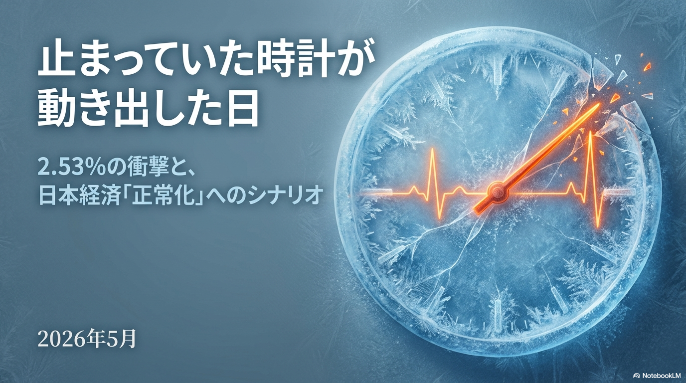
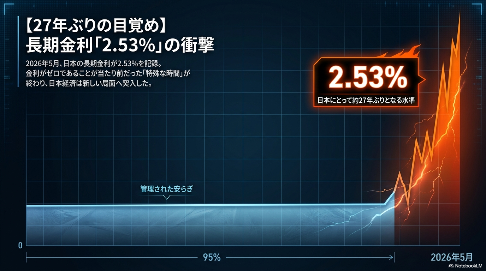
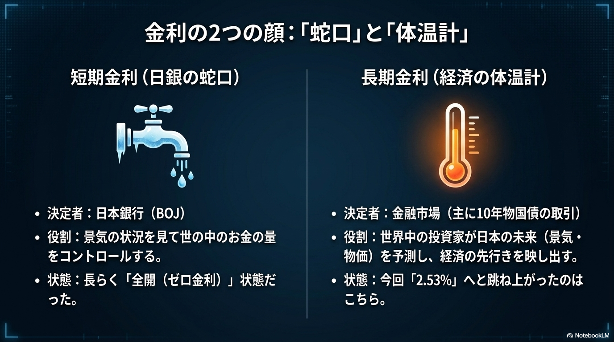
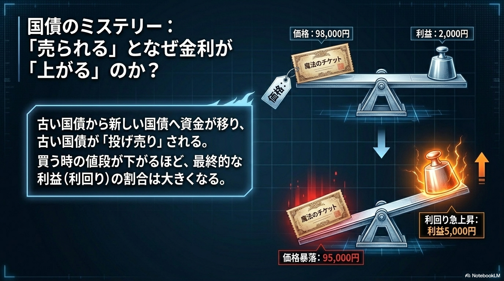
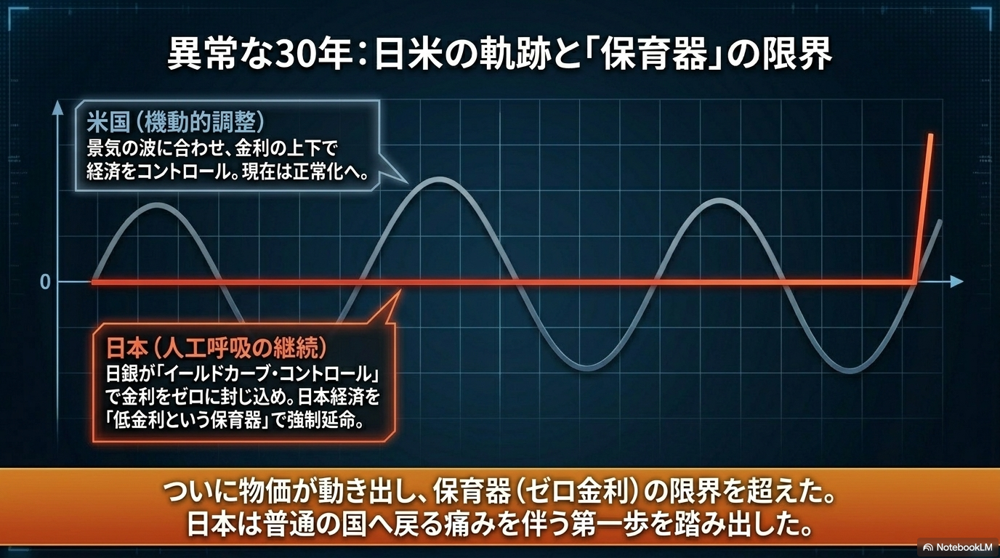
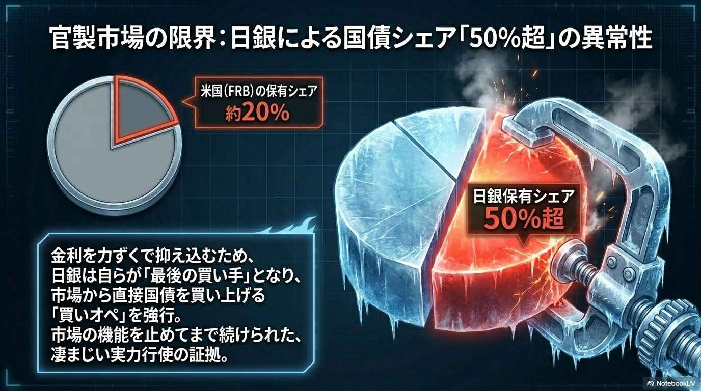
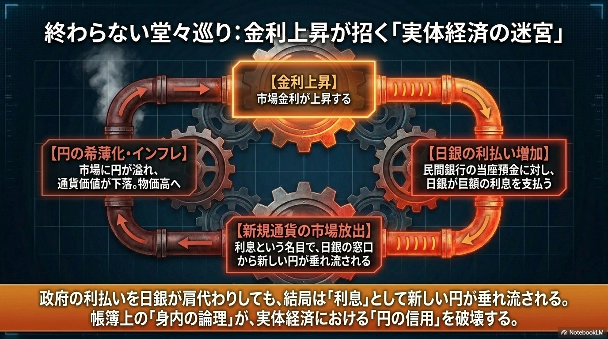
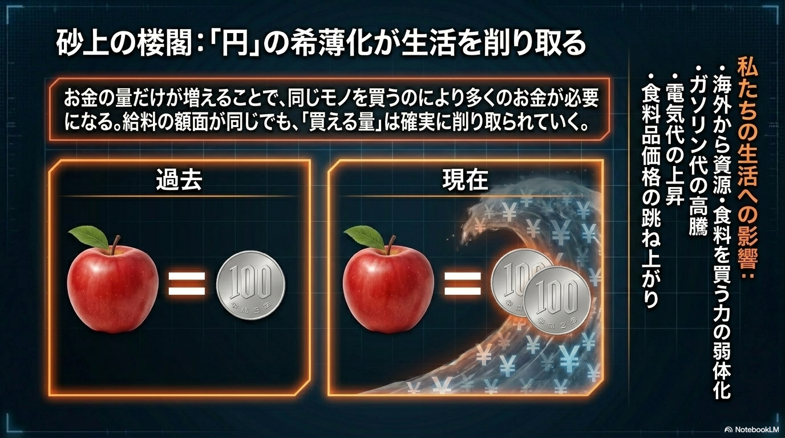
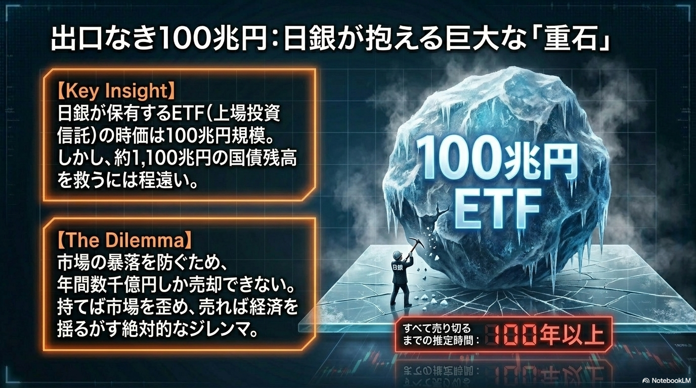
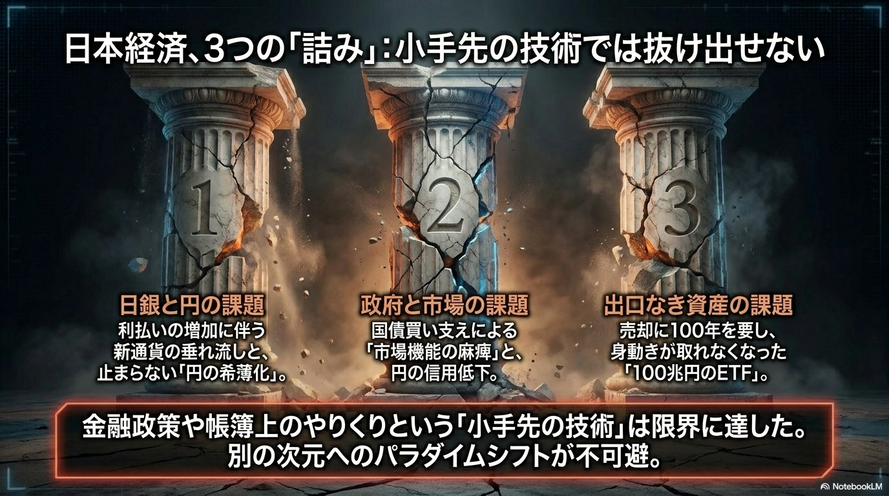

データと図解で読み解く、2026年の歴史的転換点

現在の日本経済は、(1)日銀の利払い増による円の希薄化、(2)国債買い支えによる市場機能の麻痺、(3)出口の見えない100兆円規模のETF保有という、3本の柱の崩壊に直面しています。これまでの帳簿上のやりくりは限界に達しており、根本的なパラダイムシフトが不可避となっています。

日銀が保有するETF（上場投資信託）の時価は100兆円規模に達しています。市場の暴落を防ぐためには年間数千億円ずつしか売却できず、すべてを売り切るまでには100年以上の時間を要すると推定される、絶対的なジレンマ（重石）となっています。

「円」の量が増え続けることで通貨価値が希薄化し、実質的な購買力が低下しています。給料の額面が変わらなくても、ガソリン代や電気代、食料品価格が跳ね上がることで、私たちの生活は確実に削り取られています。

市場金利が上昇すると、日銀から民間銀行への利払いが増加し、その「利息」という名目でさらに新しい円が市場へ垂れ流されます。これが円のさらなる希薄化とインフレを招くという、実体経済における「円の信用」を破壊する悪循環の構造を示しています。

金利を力ずくで抑え込むため、日銀は自らが「最後の買い手」となり市場から国債を買い上げ続けました。その保有シェアは米国の約20%に対し、日本は50%を超える異常な水準に。市場機能を停止させてまで続けられた実力行使の結果です。

景気の波に合わせて調整を行う米国に対し、日本はYCCによって金利をゼロに封じ込め、「低金利という保育器」での強制延命を続けてきました。しかし物価の動きによりその限界を迎え、日本はついに「普通の国」へ戻る、痛みを伴う第一歩を踏み出しました。

古い低金利の国債が投げ売りされ、買う時の値段が下がるほど、最終的な利益（利回り）の割合は大きくなります。シーソーのように、国債の「価格」が下落すれば、市場の「利回り（金利）」は急上昇するという国債市場の基本メカニズムの図解です。

短期金利は日銀がコントロールする「世の中のお金の量の蛇口」であり、長期金利は投資家が日本の未来を予測し映し出す「経済の体温計」です。2026年、体温計（長期金利）が2.53%へと跳ね上がったことが大きな衝撃を与えています。

2026年5月、日本の長期金利が約27年ぶりとなる2.53%を記録しました。金利ゼロが当たり前だった95%の「管理された安らぎ」の時代が終わり、日本経済が極めて鋭角な角度で新しい局面（金利のある世界）へ突入したことを示しています。

2.53%の記録は、四半世紀にわたって停止していた日本経済の時計の針が動き出した象徴です。これは単なる数値の上昇ではなく、日本経済が「正常化」という険しくも避けて通れないシナリオを歩み始めたことを告げています。